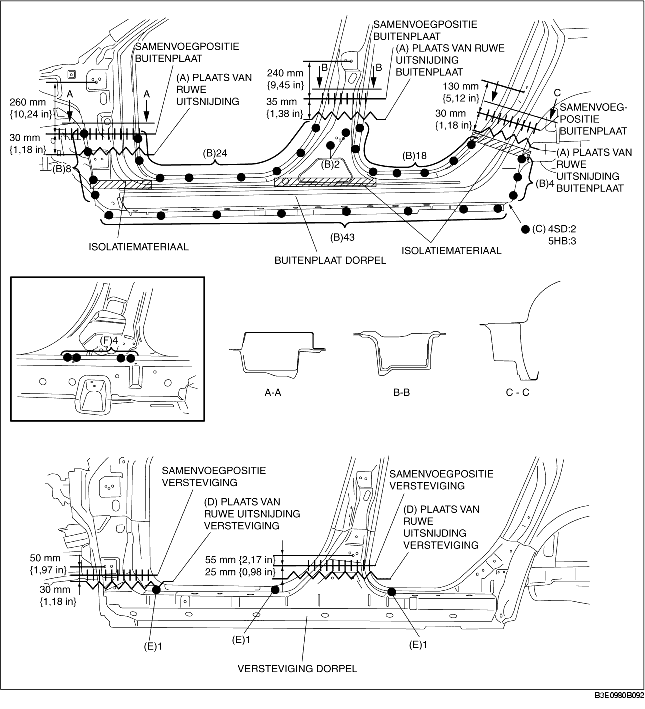

1. Maak ruwe uitsnijdingen bij (A), boor de 99 punten aangegeven met (B) en de 2 punten (4SD) of 3 punten (5HB) aangegeven met (C) uit en verwijder de buitenplaat van de dorpel.
2. Maak ruwe uitsnijdingen bij (D) en boor de 3 punten aangegeven met (E) uit.
3. Boor vanaf de binnenzijde de 4 punten aangegeven met (F) uit en verwijder de versteviging van de dorpel.
